IST 675 — Human-AI Interaction — Final Project Appendix
Why AI Outputs Succeed at the Interface and Fail in the World
IST 675 Team Presentation Materials
This appendix supports the live demonstration in the IST 675 final presentation. It documents the routing substrate that produced the demonstration figures, the camera-derived computer vision pipeline behind the corridor's stress field, the cross-street capacity model that produced the supply-side maps, and the full set of supporting figures from the underlying research program. The companion paper that motivates the substrate is linked below.
The Live Demonstration. Fastest Route Is Not Feasible Route.
The mobility instance of the paper's central argument: a routing tool returns the fastest path from Grand Central to Carnegie Hall; the same routing layer, given access to the second-order constraint field, returns a different path with twenty-two percent lower accumulated stress at the same nineteen-hop length. Same task statement, different output.
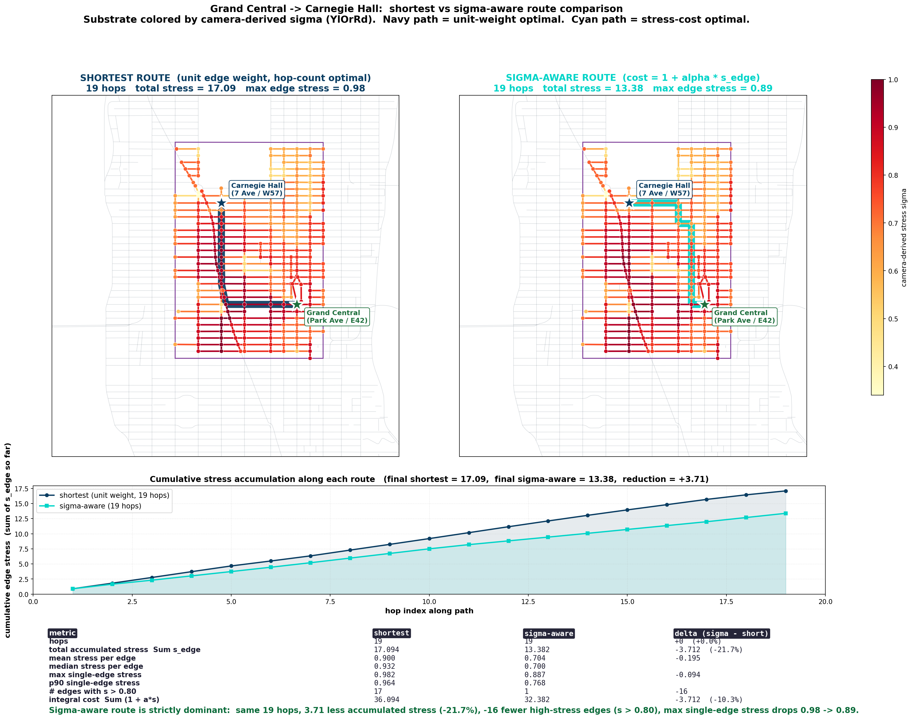
Figure 1. Shortest route (left) versus sigma-aware route (right) for Grand Central to Carnegie Hall. Both routes are nineteen hops. The sigma-aware route accumulates 13.38 units of stress versus 17.09 for the shortest route, a 21.7 percent reduction. Sixteen fewer high-stress edges; max single-edge stress drops from 0.98 to 0.89.
How the contrast generalizes
Figure 2. Nine destinations from Grand Central under the full seven-layer capacity model (sidewalk width, sheds, frontage load, construction closures, station envelopes, open streets, bike lanes). The sigma-aware recommendation differs from the shortest path in eight of the nine destinations.
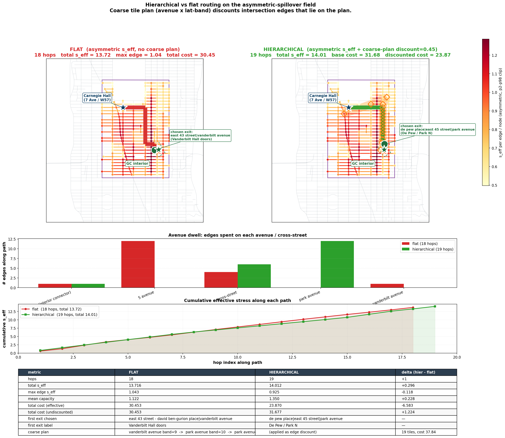
Figure 3. Hierarchical multi-scale routing versus flat routing on the same asymmetric-spillover field. The hierarchical layer applies a coarse-tile-plan discount based on which avenue band the path traverses, biasing path choice toward avenues with second-order capacity headroom even when the local edge cost is similar.
Section 2
The Substrate. Second-Order Constraint Field as Measurable Surface.
The four-panel map below renders mobility's missing-context cell as a per-block measured field. Each panel is one capacity layer of the routing substrate; the rightmost panel combines them into the effective denominator the routing cost reads against. Two hundred twenty-eight cross-street edges in the Midtown corridor carry per-block factors derived from twenty-five public NYC Open Data sources.
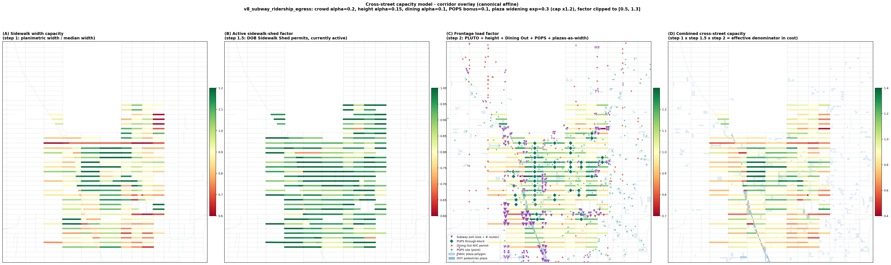
Figure 4. Four-panel cross-street capacity overlay (Lex vertical, W40 horizontal, x-flipped). Sidewalk width capacity (planimetric width / median width). Active sidewalk-shed factor (DOB Sidewalk Shed permits, currently active). Frontage load factor (PLUTO building class + height + Dining Out NYC + POPS atriums + plazas-as-width). Combined cross-street capacity (step 1 times step 1.5 times step 2 = effective denominator in routing cost).
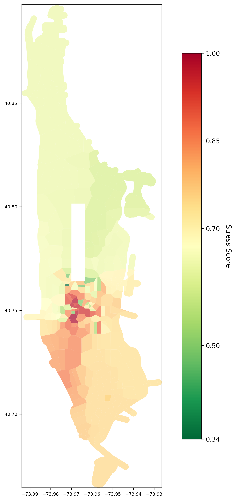
Figure 5. The corridor's camera-derived stress field, locked at color scale [0.34, 1.0] with RdYlGn_r colormap for consistency across figures. The heatmap is the supply-versus-demand context against which the capacity model operates: red blocks carry the highest measured pedestrian stress, green blocks the lowest. The routing substrate consumes per-edge sigma values lifted from this field along the same mapping chain used throughout this appendix.
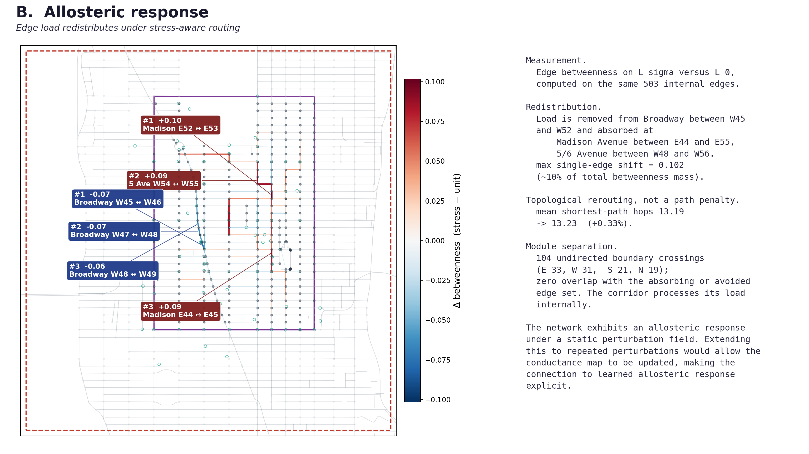
Figure 6. Edge load redistribution map. Red edges absorb rerouted load; blue edges are avoided. Maximum single-edge shift = 0.102 (~10 percent of total betweenness mass). The corridor processes its load internally; zero overlap with boundary-flux edges. This is allostery in the routing substrate: when one capacity layer is activated, betweenness redistributes corridor-wide rather than locally.
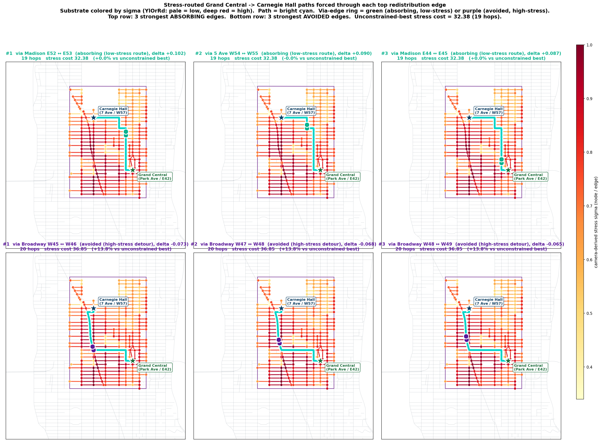
Figure 7. Six individual route panels showing the strongest absorbing edges (top row) and the strongest avoided edges (bottom row) under stress-aware routing. The pattern is the same as Figure 6 viewed at the per-edge scale: rerouted load lands on a small set of absorbing edges and avoids a corresponding set, while the bulk of the corridor sees minor adjustments.
Section 3
Computer Vision Pipeline. Camera Frames to Per-Edge Sigma.
The camera-derived stress field underlying the routing substrate originates from a computer vision pipeline that processes traffic camera frames at thirty-minute cadence across one hundred eighty-one corridor cameras. The pipeline applies a stack of vision models (instance segmentation, object detection, scene labeling) to each frame, extracts per-camera features, reduces those features to a stress score, lifts the score to per-intersection sigma over Voronoi cells, and propagates the result along a fixed mapping chain that the routing layer reads against.
Figure 8. Computer vision model outputs comparing Park Avenue (low-stress) and Madison Avenue (high-stress) corridor cameras. YOLO bounding boxes for pedestrians and vehicles, Detectron2 instance segmentation masks, CLIP scene labels. The visible difference between scenes (sparse versus dense pedestrian density, occluded versus open sidewalk surface, presence of physical scaffolding) is what the per-camera stress score quantifies.
Figure 9. Pipeline data flow from raw camera frame through CV inference, feature extraction, per-camera stress score, Voronoi cell aggregation, per-intersection sigma, per-edge sigma, to routing cost. Each stage produces reproducible intermediate outputs, and the chain is kept consistent so the heatmap, catalogs, and routing cost all read from the same field.
Figure 10a. Voronoi tessellation of the corridor by camera coverage. Each Voronoi cell is the catchment area of one corridor camera; per-camera stress scores aggregate over their cell to produce per-intersection sigma values.
Figure 10b. Agent perceptual field rendered from the per-edge sigma values. This is what the routing agent sees at any given position: a directional gradient of stress intensity that biases path selection toward lower-stress neighbors.
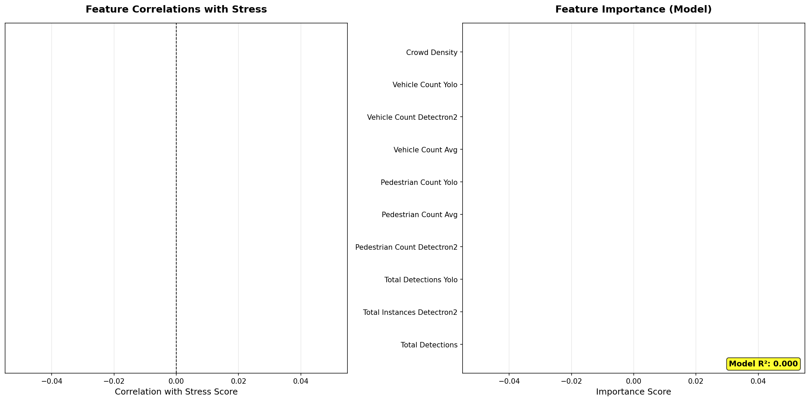
Figure 10c. Feature importance scores from the regression that maps CV-extracted features to per-camera stress. The dominant features are pedestrian density, sidewalk obstruction count, and camera-frame entropy.
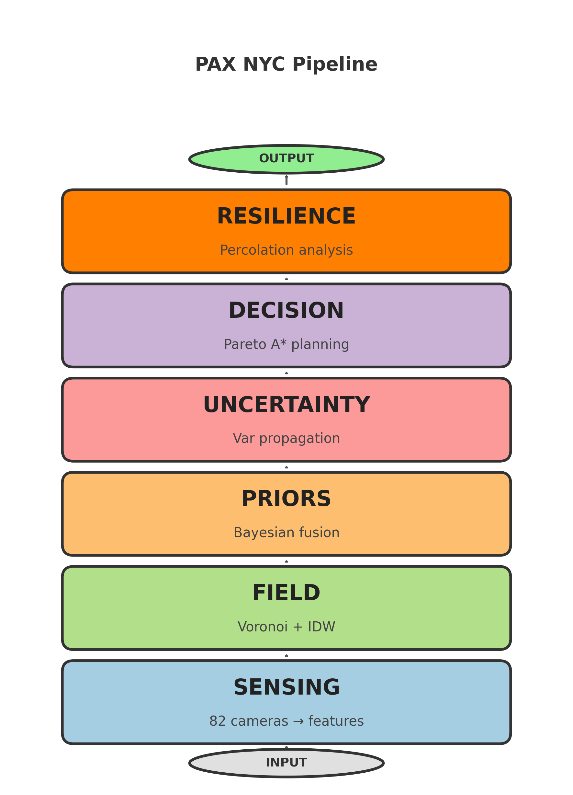
Figure 10d. Pax system architecture overview. Substrate (graph topology and capacity layers) feeds into stress field (CV-derived sigma), which feeds into routing (cost = stress / capacity). Each block is implemented as a separate pipeline stage with reproducible outputs.
First-Run Methodology Samples
The first collection run, in November 2025, established the basic camera coverage and stress-scoring methodology for the Grand Central to Carnegie Hall corridor. The figures below are sampled from that run's outputs and document the substrate's evolution.
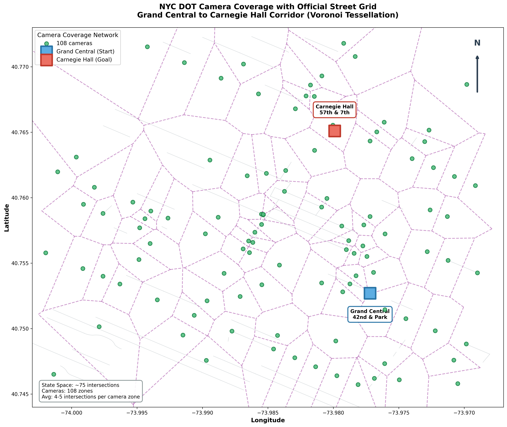
Figure 11a. First-run camera grid layout across the corridor. Forty cameras in the initial set, forty-five observed at snapshot.
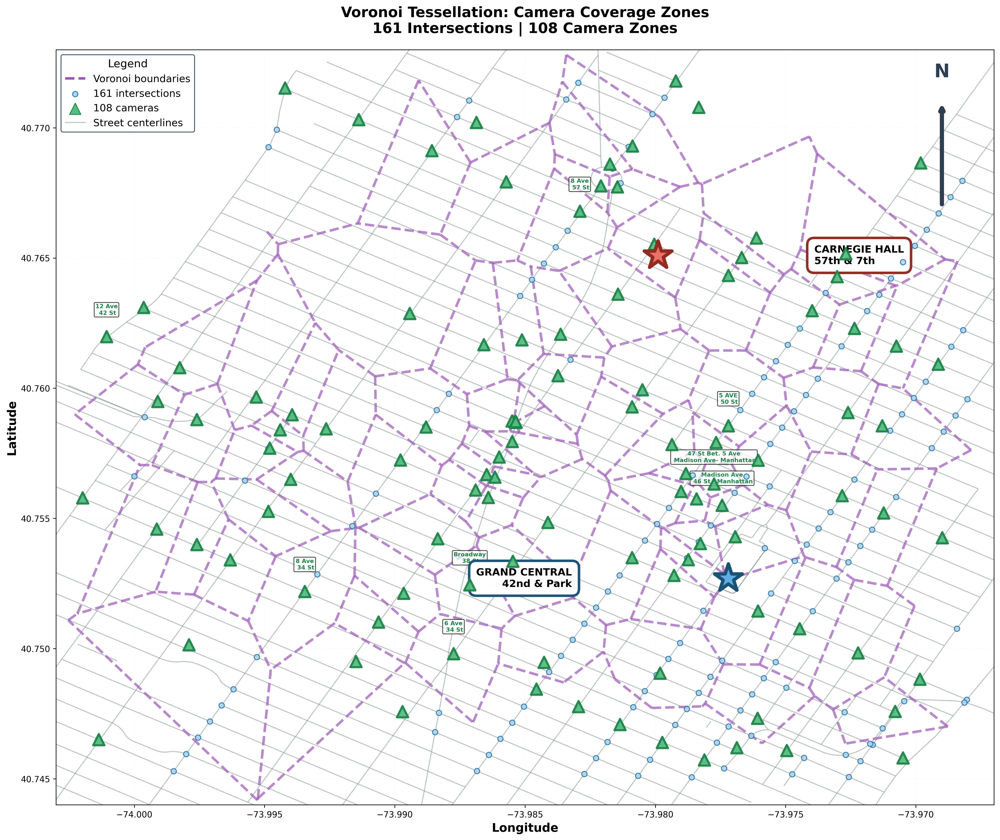
Figure 11b. First-run Voronoi tessellation. Cell boundaries are the camera-coverage catchments used for per-intersection sigma aggregation.
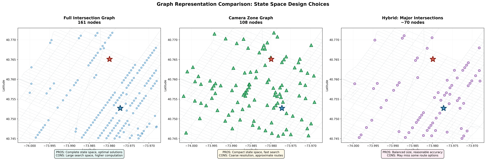
Figure 11c. First-run graph representation comparison. Different node-edge sampling strategies tested on the corridor before the 297-node, 503-edge representation was fixed for this analysis.
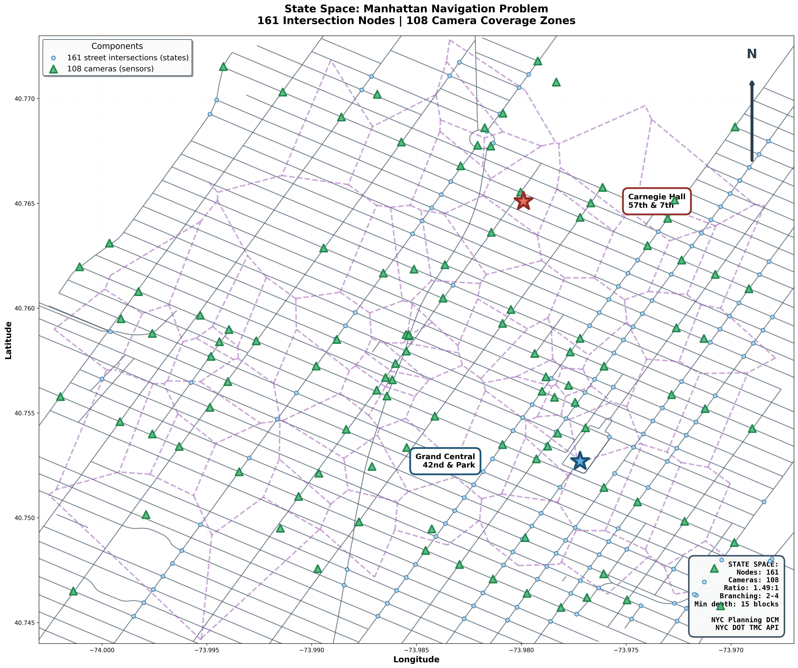
Figure 11d. First-run state-space model diagram. Conceptual schema for routing as a state-space search over node positions weighted by per-edge sigma.
Section 4
Methodology Summary.
The substrate is the product of approximately four months of iterative development. The methodology is summarized below with the major components used in this demonstration.
Data inputs
Twenty-five NYC Open Data sources span building footprints, sidewalk planimetric, PLUTO land use, POPS atriums, public plazas, MTA subway entrances and ridership, dining permits, DOB sidewalk shed permits, open streets, construction closures, bike routes, parking meters, pedestrian counts, mobility surveys, sidewalk cafe zoning, NYC 3D building models, and FHV stands. The full data-source table appears on Slide A of the deck.
Camera substrate
One hundred eighty-one NYC DOT 511 traffic cameras across the Grand Central to Carnegie Hall corridor, sampled at thirty-minute cadence from 06:00 to 22:00 ET. Frames stored in cloud blob storage; per-frame inference results aggregated to per-camera daily snapshots in a parquet warehouse.
CV stack
Detectron2 Mask R-CNN for instance segmentation, YOLO for bounding-box detection of pedestrians and vehicles, CLIP for scene labeling, and a bespoke heuristic layer for sidewalk obstruction detection.
Stress lifting
Per-camera scores are lifted to per-intersection sigma via Voronoi cell coverage (cameras are the cell sites; intersections inherit the score of the cell they fall inside). Per-intersection sigma propagates to per-edge sigma via inverse-distance weighting in EPSG:2263 NYSP feet, k=6 nearest, one smoothing pass, alpha=0.30. The same mapping chain is applied consistently across runs.
Capacity model
Per-edge capacity factor = sidewalk_width_factor × sidewalk_sheds_factor × frontage_load_factor × construction_closures_factor × station_envelopes_factor × open_streets_factor × bike_lanes_factor. Each factor is a dimensionless multiplier in a bounded range; the combined factor is the effective denominator in the routing cost.
Routing
A* search over the corridor graph with cost = (1 + alpha × sigma_edge) / capacity_factor. Hierarchical multi-scale routing applies a coarse-tile-plan discount based on avenue-band membership; this biases path choice toward avenues with second-order capacity headroom even when local edge cost is similar.
Validation
Three pillars of validation: lived-knowledge alignment against twelve reference blocks (8 of 12 aligned, 4 of 12 partial, 0 of 12 misaligned), camera-stress orthogonality (Pearson r = -0.014 between predicted capacity and measured stress, confirming supply and demand carry independent information), and internal coherence audits (catalog coordinates, POPS attribution, routing decision timing).
Section 5
Cross-Domain Invariance.
Mobility was one row. The same three columns — first-order success, missing context, failure trigger — appear in every HAII system the paper covers. The structural form of the failure is invariant; the surface contents of each row vary in the kind of constraint each system fails to register.
Domain
First-order success
Missing context
Failure trigger
Mobility (just shown)
Fastest route returned correctly under the optimization the routing tool was given.
Sidewalk width, frontage load, scaffolding, station envelopes.
The route meets a stress field it never measured, and the recommendation breaks when the field shifts.
Robotics (Habitat 3.0)
Task completed inside the simulator's objective.
Human partner behavior, room state, obstacle dynamics outside the trained envelope.
The partner moves through space the world model never registered, and the collaboration breaks.
Autonomous (Waymo)
Path planned inside the encoded driving rules and map.
Local norms, construction, informal pedestrian and cyclist gestures.
A norm-violating scene element activates downstream, and the planned path stops fitting.
Clinical (decision support)
Recommendation scored well against the encoded patient data.
Staffing pressure, prior treatment history, family context, ward conditions.
The care plan meets ward conditions the data model never encoded, and the recommended action stops fitting.
Drafting (hiring manager + AI screener)
Screening rubric satisfied. The candidate scores high on the encoded criteria.
Role fit, team dynamics, political context, the actual opening's history.
The screening signal misses the constraint that matters, and the candidate is wrong for the live opening.
Section 6
Extended Figures from the Research Program.
These figures are from the broader pax research program. They support the substrate documented above and provide additional Q&A material for technical questions.
Time-varying scenarios
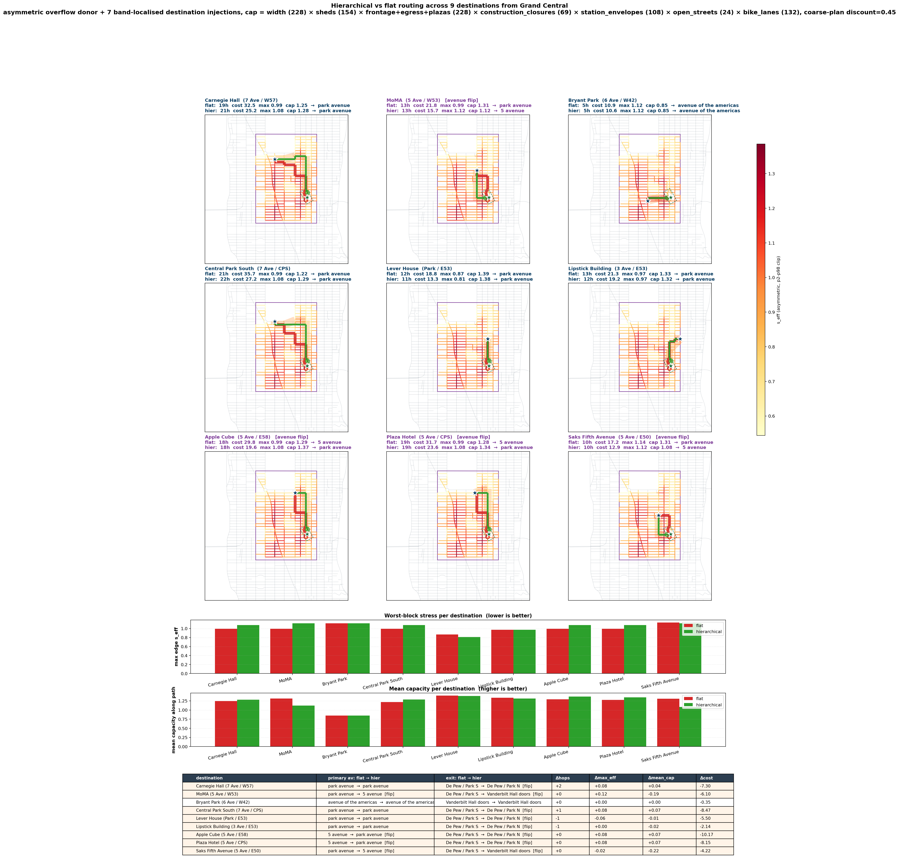
Figure 12a. AM peak time-varying scenario. Subway egress weighted by hourly ridership in the 7:00 to 10:00 ET window.Figure 12b. PM peak time-varying scenario. Subway egress weighted by hourly ridership in the 17:00 to 19:00 ET window.Figure 12c. Midday time-varying scenario. Subway egress weighted by hourly ridership in the 11:00 to 14:00 ET window.Figure 12d. Off-peak time-varying scenario. Subway egress weighted by hourly ridership in the 22:00 to 06:00 ET window.
Substrate analysis
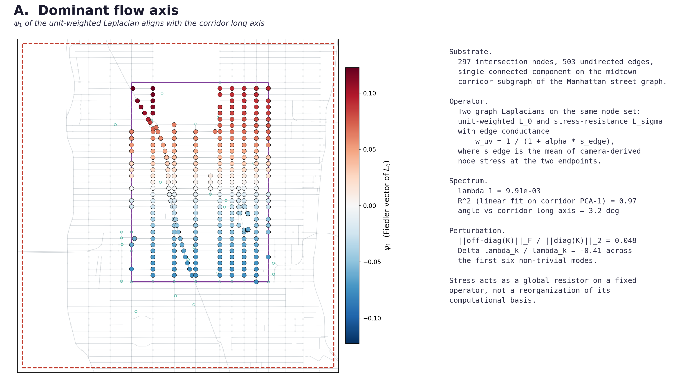
Figure 13a. Fiedler axis (psi_1 of L_0) of the corridor graph. The dominant north-south flow axis the operator extracts from the substrate. R^2 = 0.97 against the corridor long axis.
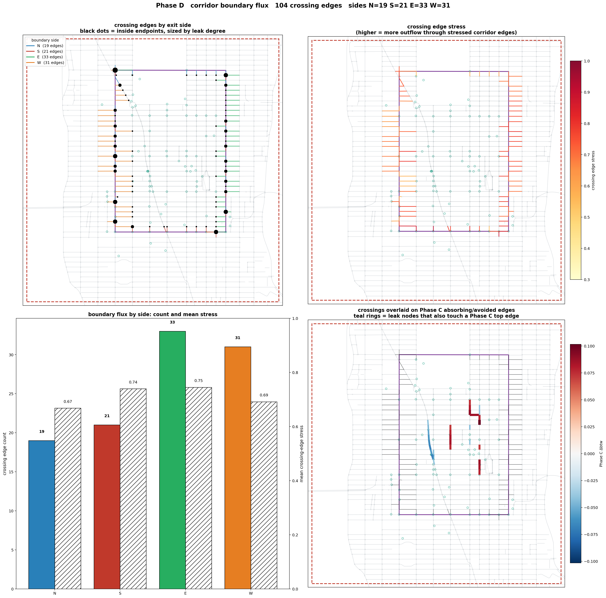
Figure 13b. Boundary flux analysis. Redistribution under stress-aware routing does not leak across the corridor boundary; the corridor processes its load internally.Figure 13c. Symmetric versus asymmetric spillover modes. Technical comparison of two coupling models for how stress on one avenue affects neighboring avenues.
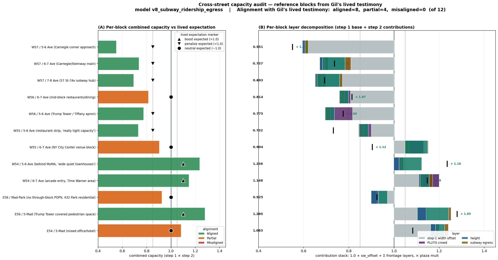
Figure 13d. Lived-knowledge audit. Twelve reference blocks where the model's predicted capacity was compared against author lived experience. Eight aligned, four partial, zero misaligned.
Capacity layer overlays
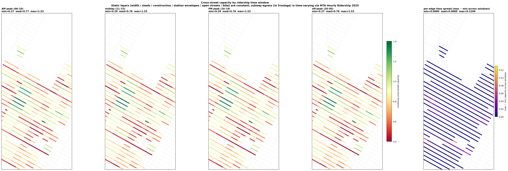
Figure 14a. Time-varying cross-street capacity field. Capacity factors that change with time of day (subway egress weighted by hourly ridership).
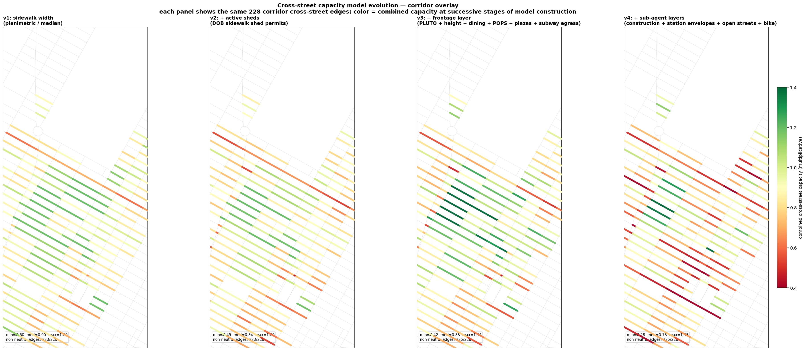
Figure 14b. Model evolution overlay. How capacity factors changed across model versions v1 through v8 as more layers were added to the substrate.
Section 7
Q&A Material.
Common questions and short answers, indexed by likely audience questions. Use the Q&A list during live discussion; jump to specific entries by Cmd-F.
Where does the camera stress score come from?
From a CV pipeline that runs YOLO bounding boxes, Detectron2 instance segmentation, and CLIP scene labels on each camera frame at thirty-minute cadence, then reduces the per-frame features to a per-camera stress score via a regression trained on lived-knowledge anchors. See Section 3 above.
How do you validate the model?
Three pillars. Lived-knowledge alignment against twelve reference blocks where author judgment is the ground truth (eight of twelve aligned). Camera-stress orthogonality, where the predicted capacity is uncorrelated with measured stress (Pearson r = -0.014, confirming supply and demand carry independent signal). Internal coherence audits of catalog coordinates, POPS attribution, and routing decision timing.
Why mobility specifically? Why not start with hiring or clinical?
Mobility is the case where the second-order constraint field is most directly measurable. Sidewalk widths come from a planimetric shapefile; sidewalk sheds come from active permits; subway envelopes come from MTA polygons. The same constraint structure exists in hiring or clinical decisions, but the surface measurements are organizational and institutional rather than physical, which makes them harder to render as a map. Mobility lets you see the column-2 cell as a measured field; the other domains run the same column with less inspectable surfaces.
How does this connect to the course readings?
Affordances (Evans, Davis) describe the first-order action field; embodiment and 4E cognition (Carney) describe the second-order constraint field; trust calibration (Hoff and Bashir) describes the calibration condition; underspecification (D'Amour) describes the technical condition in which the same output can pass every benchmark while still failing in deployment.
Is this published research?
The substrate is an ongoing research program. The IST 675 paper uses the substrate as a concrete instance of the structural argument in the position paper. The background report is linked at the top of the appendix page, and the appendix summarizes the core methodology used in the demonstration.
What's the relationship to Lisa Manning's rigidity-transition work?
The position paper imports the vocabulary of jamming, rigidity, and second-order constraint without naming Manning explicitly. The routing substrate operates near what Manning's framework would call the rigidity transition: the constraint count crosses a threshold above which small perturbations to the constraint field produce large rearrangements in route topology. The redistribution figure (Figure 6) is the soft-mode response to a static perturbation that this framing predicts.
What would intervention look like in practice?
Intervention can occur in three places. Representation: surface scene constraints to the user before send (e.g., "the route crosses three active sidewalk sheds"). Control: introduce a confirmation prompt at the moment of commitment that names the second-order load the route is about to enter. Signal: post-commitment outcome telemetry to detect mismatch earlier and update the representation for the next cycle. The closing-the-loop slide names all three intervention points.
How do I run this myself?
The cross-street capacity model is reproducible from public NYC Open Data. The CV pipeline requires camera image data that is not currently public.
Section 8
Selected Related Literature.
Two recent papers that the substrate's framing engages with directly. Both make the same methodological move the pax substrate makes (judge a system by the geometry of the set its dynamics explore, not by a single point or local property), in different fields. They are useful as Q&A anchors for technical audiences.
Sane et al. (2025). Generalization at the Edge of Stability.
Core claim: Modern neural networks trained at large learning rates operate in chaotic dynamics where standard pointwise complexity measures (parameter count, Hessian trace, spectral norm) fail to predict generalization. The authors model stochastic optimizers as random dynamical systems converging to fractal attractors and introduce the Sharpness Dimension (SD), a Lyapunov-inspired complexity measure based on the full Hessian spectrum. SD predicts generalization where pointwise sharpness measures fail.
Connection to the pax substrate: The methodological move is identical. SD shifts attention from the local properties of a loss minimum to the dimension of the attractor the optimizer explores. The pax substrate shifts attention from the local cost of an optimal route to the dimension of the constraint field the routing layer reads against. Both are attractor-centric reframings of pointwise analyses.
Vocabulary bridge (selected):
RDS (random dynamical system) ↔ routing under uncertainty
Pullback random attractor ↔ set of feasible routes over varying capacity field
Edge of Stability ↔ near-rigidity transition (soft modes; the redistribution figure)
Sharpness Dimension (SD) ↔ effective dimensionality of the substrate's response surface
Hessian spectrum ↔ Laplacian spectrum L_0 of the corridor graph
Forward-invariant set ↔ the corridor itself (zero boundary leakage)
Field: Computational neuroscience and collective behavior.
Core claim: Collective motion in animal groups emerges from neurobiologically grounded ring-attractor networks that encode bearings towards conspecifics in either an allocentric (world-centered, anchored to a stable landmark) or an egocentric (heading-relative) reference frame. The authors show that allocentric encoding produces coherent flocking spontaneously; egocentric encoding alone fails. Rapid switching between the two enhances coordination. Collective motion can therefore arise directly from animals' navigational circuits, without explicit alignment rules.
Connection to the pax substrate: The egocentric vs allocentric distinction is the same structural distinction the IST 675 paper draws between first-order (interface-relative) and second-order (scene-anchored) representations. In the flocking paper, animals encoding bearings only egocentrically cannot form coherent groups; in the routing case, an interface offering only first-order moves cannot reach the second-order constraint field that determines outcome fit. Both papers argue the operative variable is the choice of reference frame, and both find that operating only in the agent-centered (egocentric / first-order) frame is structurally insufficient.
Ring-attractor network encoding bearings ↔ the substrate's per-edge cost function reading against the capacity field
Spontaneous collective motion under allocentric encoding ↔ coherent route selection under second-order-aware optimization
Failure of egocentric-only encoding to produce coherent flocking ↔ failure of first-order-only routing to produce contextually fit recommendations
Rapid switching between allocentric and egocentric for enhanced coordination ↔ closed-loop intervention (recalibrate representation; carry the update into the next cycle)
Why this paper matters for the demonstration: Sridhar et al. provide a neurobiologically-grounded existence proof that the egocentric / allocentric distinction is operative in collective behavior at the level of neural circuitry. This strengthens the IST 675 paper's structural claim by demonstrating the same distinction applies in a domain (animal collective motion) far removed from human-AI interaction. The form recurs because the underlying constraint structure is the same: an agent that cannot reach the world-anchored frame cannot coordinate with the scene.
Section 9
References.
Bousmalis, K., et al. (2023). RoboCat: A self-improving generalist agent for robotic manipulation. arXiv:2306.11706.
Carney, J. (2020). Thinking avant la lettre: A review of 4E cognition. Evolutionary Studies in Imaginative Culture, 4(1), 77 to 90.
Clinciu, M.-A., and Hastie, H. (2019). A survey of explainable AI terminology. Proc. NL4XAI, 8 to 13.
D'Amour, A., et al. (2020). Underspecification presents challenges for credibility in modern machine learning. arXiv:2011.03395.
Davis, J. L. (2023). 'Affordances' for machine learning. Proc. ACM FAccT '23, 324 to 332.
Evans, S. K., Pearce, K. E., Vitak, J., and Treem, J. W. (2017). Explicating affordances. JCMC, 22(1), 35 to 52.
Gambino, A., Fox, J., and Ratan, R. A. (2020). Building a stronger CASA. Human-Machine Communication, 1, 71 to 86.
Gibbs, J. L., Kim, H., and Boyraz, M. (2021). Investigating the role of communication technologies in human-machine communication. Annals of the International Communication Association, 45(4), 270 to 296.
Hoff, K. A., and Bashir, M. (2015). Trust in automation. Human Factors, 57(3), 407 to 434.
Koban, K., and Banks, J. (2023). It feels, therefore it is. Computers in Human Behavior, 146, 107788.
Liu, Y., et al. (2026). WanderDream: Evaluating situated reasoning in world and multimodal language models.
Meta. (2024). Frontier AI Framework. Meta Platforms.
Puig, X., et al. (2023). Habitat 3.0: A co-habitat for humans, avatars and robots. arXiv:2310.13724.
Sane, et al. (2025). Generalization at the Edge of Stability. arXiv:2604.19740.